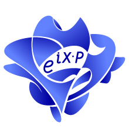

Formal Semantics of Programming Languages
Spring 2022, BIMSA
Course Information
| Abstract: |
In this course we study methods to define behaviors of programs, and methods to reason about properties of programs. We also practice building verified programs using Coq. |
| Time: |
Every Thursday, 13:30pm - 16:55pm, starting from Mar 17 |
| Classroom: |
1118 |
| Zoom: |
638 227 8222, pw: BIMSA |
Lecture Notes
- [03/17]:
Introduction,
Coq overview,
and mathematical background
(notes).
Here is how to intall Coq, Emacs and Proof General on Windows.
Linux and Mac users may prefer installing Coq via opam, and install Emacs and Proof General following their instructions.
Here is the Coq files used for the demo.
- [03/24]:
Math background continued (predicate logic) & lambda calculus (notes).
Read the first three sections of Peter Selinger's lecture notes.
- [03/31]:
Lambda calculus continued & simply typed lambda calculus (notes).
Coq impl of STLC in Software Foundations Vol. 2.
- [04/07]:
Operational semantics
(notes).
Textbooks and References
- Textbooks: lecture notes and handouts
- References:
Back
Last modified: Apr 6, 2022